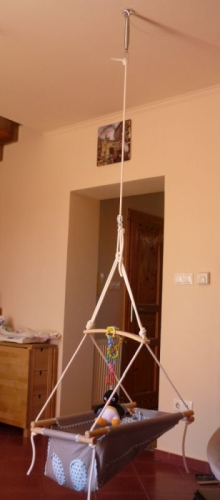

A kislányom, Boglárka nemrég született. Sokszor nehezen alszik el, ilyenkor jó szolgálatot tesz a nappaliban felszerelt Adamo hintánk. Ha beletesszük a hintába és elkezdjük rázni, pár perc alatt megnyugszik, akár el is alszik. Viszont amint abbahagyjuk a hinta rázását, a leányzó elkezd ébredezni és sírni. Amíg alszik jó lenne haladni az otthoni teendőkkel, de valakinek a hintát is rázni kellene. A feleségem azt mondta kitalálhatnék valami megoldást arra, hogyan lehetne automatikusan rázni a hintát, hogy ne kelljen ott ülni mellette. Keresgélhetnék az interneten valami már létező terméket erre a problémára, de abban nem lenne sok kihívás. Amíg kitalálok erre egy saját gépet, addig laptoppal az ölemben tudom kézzel lökdosni a hintát, és addig sem kell a házimunkával foglalkoznom.

A hinta egy rugón keresztül van a mennyezetre függesztve. Elsősorban fel-le kell mozgatni, Bogi ezt szereti a legjobban. A hinta benne Bogival együtt egy másodrendű lengő rendszer, kb. 2 Hz-es sajátfrekvenciával. Amikor a hintát kézzel lökdössük, akkor a kezünk mozgása is felveszi ezt a frekvenciát, és ezzel gerjesztjük. Szükség lenne valamilyen egyszerű gépre, ami szintén ezen a frekvencián lökdösi a hintát. Volt otthon egy vödör LEGO, kiöntöttem, és elkezdtem ötletelni.
A legegyszerűbb megoldásnak az tűnik, ha a hintát alulról lökdösné a gép. Egy egyszerű fel-le mozgásra van szükség. Nagy erőkifejtésre nincs szükség, a hinta szépen rugózik akkor is, ha csak kicsit lököm meg. Fontos azonban a frekvencia, pontosan a rendszer sajátfrekvenciáján kell lökdösnöm. Ezt könnyen kipróbálhatjuk kézzel is: ha lassabban vagy gyorsabban próbálom lökdösni, a kezem néhány lengés után ellenállásba ütközik, a hinta lengése csillapodik. A hintát lökdöső gépnek egy zárt szabályzókörrel kell rendelkeznie, vagy legalább nagyon finoman hangolhatónak kell lennie. Ha zárt a szabályzókör, akkor valahogyan mérni kell a hinta lengési frekvenciáját. Ez a frekvencia napról napra változni fog, ahogy Bogi súlya gyarapodik.
Folytatás hamarosan, Bogi épp felébredt. Ez az oldal egyébként webfejlesztő tanulmányaim első projektje, ígérem szépülni fog, ahogy haladok a leckékkel.